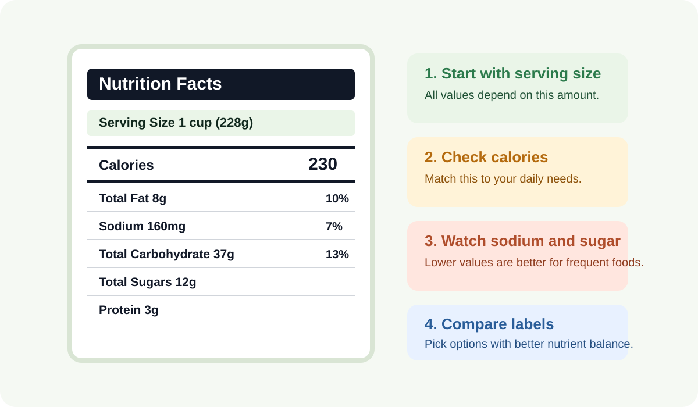

Balanced Energy
Understand carbs, fats, and proteins for steady energy.
Eat Better, Feel Better
Learn what your meals contain, compare choices quickly, and use practical tools to stay on track every week.
Understand carbs, fats, and proteins for steady energy.
Track sodium, fiber, and sugar to support heart health.
Use habit tracking and food swaps to improve choices over time.
Foods Included
25+
Interactive Tools
5
Focus
Practical Nutrition
Carbs fuel activity, proteins build and repair tissues, and healthy fats support hormones and brain function.
Vitamins and minerals support immunity, bones, blood health, and cellular processes, even in small amounts.
Adequate daily water helps digestion, temperature control, focus, and workout recovery.

Filter and search foods to compare their nutrition quickly.
0 foods
Values shown are approximate and educational.
Select a food item to see detailed nutrients.
Complete the form to estimate your daily calorie, macro, and hydration needs.
Low intake of protein, vitamins, or water can affect energy, immunity, recovery, and focus. These are practical first-step actions you can take.
If symptoms persist, seek guidance from a qualified healthcare professional.
One small change can improve nutrition quality over time.
Track your consistency this week.
Feedback prompt: Have suggestions for new foods or tools? Share them with your project team to improve this awareness site.
Disclaimer: This website is for educational awareness and is not a substitute for professional medical advice.